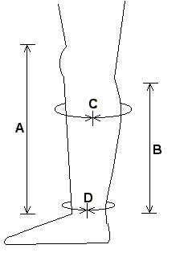
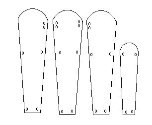
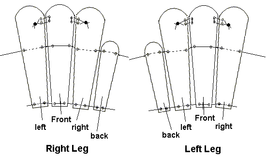
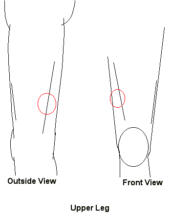

The Well-Equipped Protester, Part 2
Leg Armor
by
Carl Bussjaeger
|
Last month's article on constructing impact armor for the torso was better received than I really expected. Not that I'm complaining, mind you.
One bit of feedback inquired about "greaves" (lower leg armor), or the efficacy of baseball catcher's shin guards. For what they do cover, shin guards are fine; they're designed to protect you from hard balls traveling in excess of ninety miles per hour, after all. The downside is that they only protect the front of your lower legs (and knees). Cops are often trained in something called "pressure point control tactics" (PPCT). I'll go into more depth in this next month. For now, the short form is that -- as any martial arts-trained person can tell you -- the human body has several nerve centers which a trained person can exploit with pressure and strikes to disable or control an opponent. This becomes important with leg armor because one nerve center, the tibial nerve, is located on the back of the leg at the top of the calf muscle. A shin or baton strike there can cause your leg to momentarily collapse. shin guards can't protect you here, but ol' fashioned (or SCA-style) greaves can.
Greaves Start by getting some basic measurements from your lower leg. Measurements should be taken over your pants. 
B is the rear of the leg, ankle to an inch below the knee. C is the distance around your calf at its widest. D is the distance around your ankle. Now you need to make two sets of four plates.  As pictured, this set will fit the right leg. Your second set should be a mirror image of this to fit the left leg. The three longer plates should have a length equal to measurement A. The fourth, shorter, plate is length B. The cumulative width of all four plates -- as measured at the height of the short (B) plate should equal measurement C. Likewise, the cumulative width of the narrow bottom ends of the plates should equal measurement D Now all you have to do is lace the plates together.  Ta da! Greaves.
Cuisses  By now, I'll bet you don't really need me to hold your hand and walk you through the exact process. Just think laced plates.
Knees
|